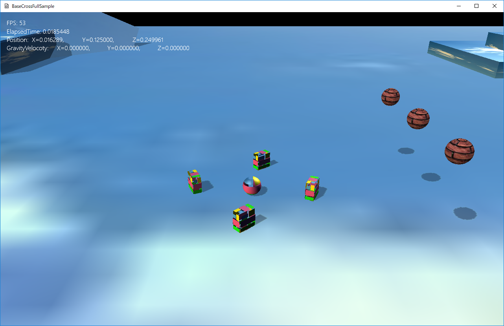

図1203a
オブジェクトの位置や回転、スケーリングを動的に変更する手段として、何秒間でどこまで移動といった指定ができると便利です。
//初期化
void ActionObject::OnCreate() {
auto Ptr = GetComponent<Transform>();
Ptr->SetPosition(m_StartPos);
Ptr->SetScale(0.25f, 0.25f, 0.25f); //直径25センチの球体
Ptr->SetRotation(0.0f, 0.0f, 0.0f);
//CollisionSphere衝突判定を付ける
auto PtrColl = AddComponent<CollisionSphere>();
//Fixedを設定する
PtrColl->SetFixed(true);
//アクションの登録
auto PtrAction = AddComponent<Action>();
PtrAction->AddRotateBy(1.0f, Vec3(0, XM_PI, 0));
PtrAction->AddRotateInterval(1.0f);
PtrAction->AddMoveBy(1.0f, Vec3(2.0f, 0, 0));
PtrAction->AddMoveBy(0.5f, Vec3(0, 1.0f, -1.0f), Lerp::Linear, Lerp::EaseOut, Lerp::Linear);
PtrAction->AddMoveBy(0.5f, Vec3(0, -1.0f, -1.0f), Lerp::Linear, Lerp::Easein, Lerp::Linear);
PtrAction->AddMoveBy(2.0f, Vec3(-4.0f, 0, 0));
PtrAction->AddMoveBy(1.0f, Vec3(0, 0, 2.0f));
PtrAction->AddMoveBy(1.0f, Vec3(2.0f, 0, 0));
//ループする
PtrAction->SetLooped(true);
//アクション開始
PtrAction->Run();
//影の作成
auto ShadowPtr = AddComponent<Shadowmap>();
//影の形状
ShadowPtr->SetMeshResource(L"DEFAULT_SPHERE");
//描画コンポーネント
auto PtrDraw = AddComponent<PNTStaticDraw>();
//メッシュの登録
PtrDraw->SetMeshResource(L"DEFAULT_SPHERE");
//テクスチャの登録
PtrDraw->SetTextureResource(L"WALL_TX");
}
//ループする
PtrAction->SetLooped(true);
//ループしない
PtrAction->SetLooped(false);
PtrAction->AddRotateInterval(1.0f);
ScaleToコンポーネント 目的の拡大率に拡大縮小 ScaleByコンポーネント 目的の相対スケールにに拡大縮小 RotateToコンポーネント 目的の角度に回転 RotateByコンポーネント 目的の相対角度に回転 MoveToコンポーネント 目的の位置に移動 MoveByコンポーネント 目的の相対位置に移動
//CollisionSphere衝突判定を付ける
auto PtrColl = AddComponent<CollisionSphere>();
//Fixedを設定する
PtrColl->SetFixed(true);